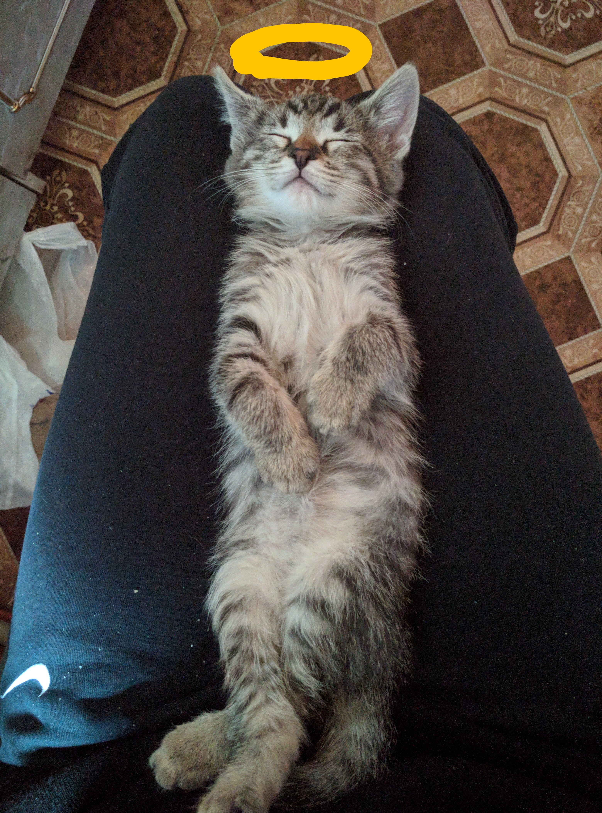

Собственно, вот и я:

красавчик, правда?
совсем недавно мне исполнился 1 год, так что по меркам кота я уже достаточно
взрослый.
Моё детсво прошло среди моих братишек и сестричек,
я их почти не помню, я отличался от них своей пушистостью и хулиганским нравом,
в то время меня и
прозвали-
парень на районе

эт мои родственники

вообще я очень дружелюбный и люблю узнавать новых живых существ.
Вскоре я попал в руки к человеку, еще совсем юный
вот мой первый день вдали от своей стаи
меня ждало множество испытаний и чудесных открытий.
я полюбил лес,
эти шорохи, миллиарды звуков, запахов
поначалу сводили сума,

но вскоре я научился различать...

я стал мастером

но случилось непредвиденное - вскоре мы переехали в город
теперь мои любимые занятия:
мне пора бежать- дела
всем peace!
если ты человек и хочешь больше узнать о котах, то тебе сюда
О чем думают кошки